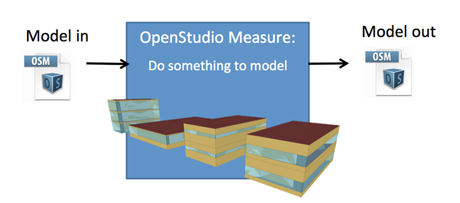
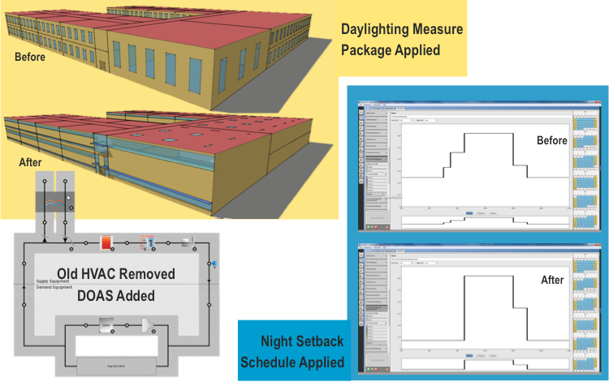
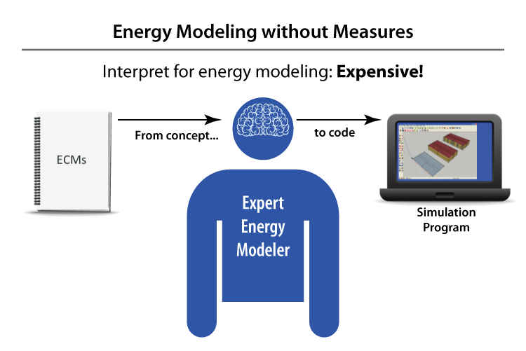
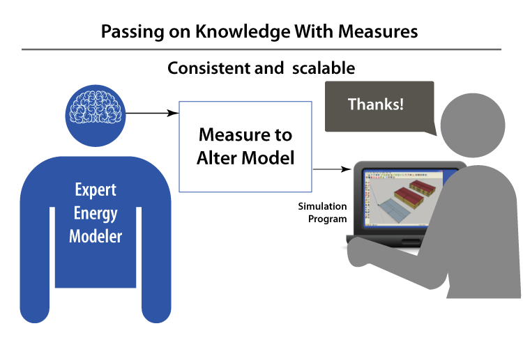
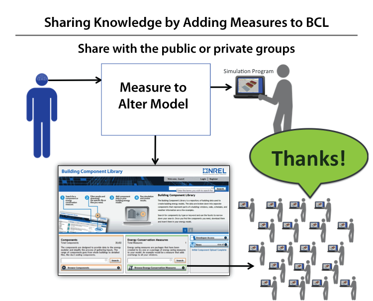
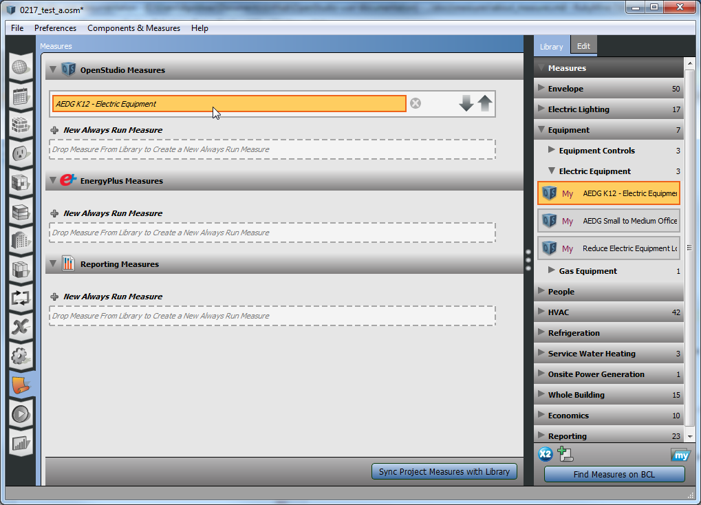
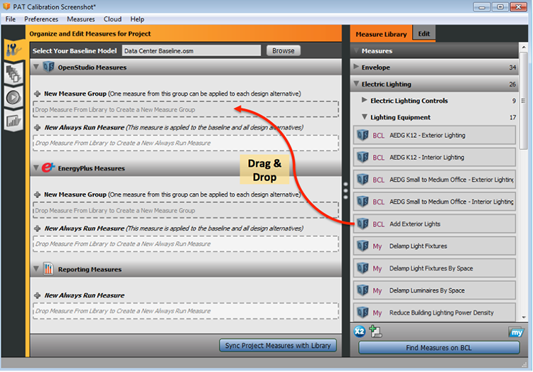

About Measures
In building design and retrofits, the terms energy efficiency measure (EEM) and energy conservation measure (ECM) refer to a specific change that can be made to a building to reduce its energy use. As an example, if you are retrofitting an existing building and one of the ECMs suggested by the design team is "Add insulation to the roof", then you can run that measure to quickly alter your model.
In OpenStudio, a measure is a set of programmatic instructions (such as an Excel macro) that makes changes to an energy model to reflect its application. In our example, the measure might find the default construction used by roof surfaces in the model, copy this construction and add insulation material to the outside, then set the new construction with added insulation as the default construction to be used by roof surfaces. Measures can be written specifically for an individual model, or they may be more generic to work on a wide range of possible models.

Examples:

Above: Examples of EE alterations to the model using measures.
Benefits of Measures
Measures can help energy modelers by:
- Reducing modeling time and cost
- Finding deeper savings
- Lowering administrative and training costs
- Maintain quality and consistency




How Do You Use Measures?
Apply Measure Now
The "Apply Measure Now" dialog, which can be found under the "Components & Measures" menu in the OpenStudio application, applies a measure to your current model. It is similar to using the user scripts in the OpenStudio SketchUp Plugin, in that it alters the currently open model. Apply Measures Now is only applicable for OpenStudio measures, vs. EnergyPlus or Reporting. You need to save your model before using this tool, you have two levels of inspection available to you. First you can cancel out of the measure after inspecting the logs reported by it. If you accept the measure, then your model is updated but not yet saved. After inspecting the model if you don't like the changes that were made you can revert to the previously saved model.

Above: Apply Measure Now Dialog.
OpenStudio Application Measures Tab
The Measures tab allows you to browse measures and add them to the workflow for your current model. Unlike the "Apply Measure Now" tool, this tab doesn't alter your current model. Instead it sets up one or more measures to be applied at run-time. It will affect the results of your simulation but won't alter what the current OSM looks like when you inspect it with the application. This tab support OpenStudio, EnergyPlus, and Reporting measures.

Above: Measures Tab in OpenStudio Application.
Parametric Analysis Tool
In the Parametric Analysis Tool (PAT), you first drag all the measures you will use into your project and edit them to have the desired inputs. On the second tab, you create the design alternatives using the measures you set up on the first tab.

Above: Measures can be added by dragging and dropping them into your project in both the OpenStudio Application and in PAT.

Above: Edit the measure inputs by selecting the measure and going to the right panel "Edit" tab.
Command Line
Measures can be run from a command line using a custom user script. The .rb file in the test directory of a measure is an example of this use case.
Where Do You Find Measures?
Building Component Library (BCL)
You can find measures by going directly to the BCL site and searching or browsing for measures.
Measures can be downloaded directly from BCL through the OpenStudio Application and the ParametricAnalysisTool.
Locally Shared Measures
Under the "Preferences" menu you can set a local measure path using the "Change My Measures Directory" menu option. This allows you to set a local or network directory for measures to show in the OpenStudio Application and Parametric Analysis Tool. This is in addition to any BCL measures you already have downloaded. They local measures will have say "My" in front of them vs. "BCL".
Create Your Own
Want to write your own custom measure? Start with the Measure Writing Guide.
Scripted Workflows
Want to script your entire workflow? The OpenStudio Command Line Interface can run your measure based workflow quickly and easily.